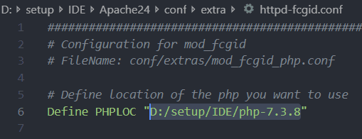

Windows 下配置Apache运行PHP
首先需要准备的文件
然后拉到最下面，将Include conf/extra/httpd-fcgid.conf取消注释，该项待会用来指定PHP目录。如图 然后我们在extra文件夹下找到
然后我们在extra文件夹下找到httpd-fcgid.conf，将Define PHPLOC后改为自己的PHP绝对路径，如图为我的PHP目录
目前我就修改了这些，能够很好的满足我的需求，若你还有其他需求，仔细看看配置的注释，说不定会找到答案。
- 下面开始安装
为了方便，将
httpd所在的bin目录添加到环境变量
 使用管理员权限运行powershell 执行如下两条命令，可以将运行powershell所在的目录添加到环境变量
```
$p1=Environment::GetEnvironmentvariable("Path", "Machine")
使用管理员权限运行powershell 执行如下两条命令，可以将运行powershell所在的目录添加到环境变量
```
$p1=Environment::GetEnvironmentvariable("Path", "Machine")
>
首先，在powershell中输入`httpd -t`来检查配置是否存在问题，若显示OK，
即可进行安装，输入`httpd -k install`安装Apache，安装完成，`httpd -k start`启动服务,也可以到bin目录下找到ApacheMonitor启动服务、查看服务状态
如果你未更改`DocumentRoot`在浏览器输入`localhost`可以看到
我更改了目录，并且目录下没有 index.html，会显示`DocumentRoot`目录，如图
## 测试
写一个简单的代码


可以看到成功执行。现在在就可以在windows下~~愉快的~~写网站了。
## 最后附上几个常用命令
1) 安装apache服务
httpd.exe -k install
2) 指定要安装的服务的名称（适用于电脑上有几个不同的Apache服务设施）
httpd.exe -k install -n "MyServiceName"
3) 指定服务配置文件的路径和名称
httpd.exe -k install -n "MyServiceName" -f "c:\files\my.conf"
注：若不使用特殊参数（如httpd.exe -k install），服务名称为Apache2.X，配置文件为conf\httpd.conf
4) 移除一个Apache服务
httpd.exe -k uninstall
5) 移除特定的Apache服务
httpd.exe -k uninstall -n "MyServiceName"
2. 管理Apache服务
1) 启动已安装的Apache服务
httpd.exe -k start
2) 停止已安装的Apache服务
httpd.exe -k stop || httpd.exe -k shutdown
3) 重启已安装的Apache服务(迫使服务重读配置文件，适用于修改配置文件后)
httpd.exe -k restart
```
 我也传了一个蓝奏云，https://www.lanzous.com/i5cns8b
我也传了一个蓝奏云，https://www.lanzous.com/i5cns8b 如果你想指定你编写网页的路径，即Apache打开的默认位置，需要修改
如果你想指定你编写网页的路径，即Apache打开的默认位置，需要修改